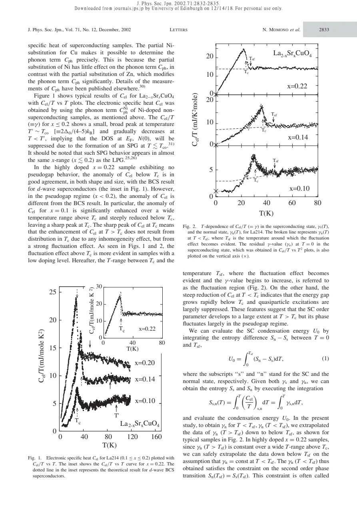
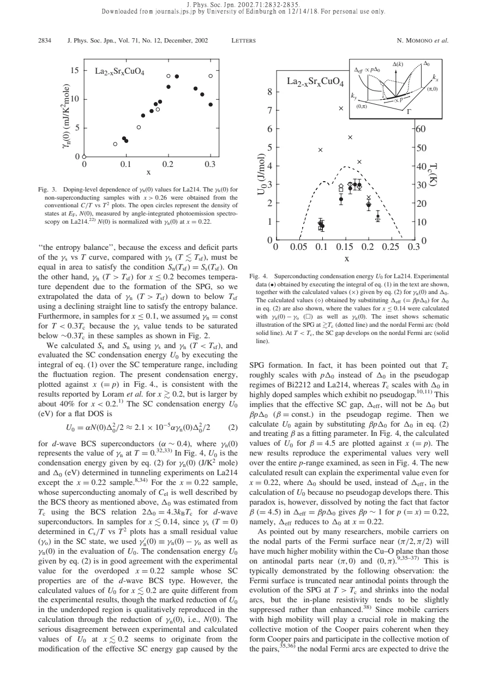

experiment · Momono · supplied source 2002
Superconducting Condensation Energy and Pseudogap Formation in La2-xSrxCuO4 - New Energy scale for Superconductivity
Specific heat gives a strongly reduced underdoped condensation energy; the source models it with an effective gap proportional to pΔ0.
The question: Why can the maximum spectroscopic gap increase while superconducting condensation energy decreases?
Before you start: the few terms you need
- Electronic entropy: integrate electronic C/T over temperature
- Condensation energy: integrate the normal–superconducting entropy difference
- Spectral gap magnitude and the number of pairing states are separate quantities
See → explain → test
Understand it in four pictures.
Picture 1 / 4
Extract the electronic heat
Look for: A non-superconducting Ni-substituted reference supplies the phonon subtraction.
Swipe across the picture to read every label, or enlarge it below.
- Measured heat capacity
- Subtract phonon reference
- Electronic C/T
Teaching schematic. Ni is chosen because its phonon effect is smaller in this analysis; Zn is not assumed interchangeable.
Background choice matters before interpreting small electronic anomalies.
Picture 2 / 4
Integrate twice
Look for: First integrate C/T to entropy, then the normal–superconducting entropy difference to energy.
Swipe across the picture to read every label, or enlarge it below.
Teaching schematic. The normal-state curve below the fluctuation onset is extrapolated, not directly observed.
Condensation energy is an area constrained by a normal-state continuation.
Picture 3 / 4
Compare gap scales
Look for: Using the full maximum gap overestimates underdoped condensation energy.
Swipe across the picture to read every label, or enlarge it below.
- Use Δ0
- Use Δeff = 4.5pΔ0
Teaching schematic. This is a model comparison; no fitted energy curve is reconstructed.
Reducing DOS alone is insufficient within the tested BCS-like calculation.
Check the original: PDF p. 3
Picture 4 / 4
Interpret the effective scale
Look for: A shrinking coherent nodal arc is proposed to explain the smaller pairing scale.
Swipe across the picture to read every label, or enlarge it below.
- Reduced U0 and DOS
- Effective gap fit
- Nodal-arc proposal
Teaching schematic. The coefficient 4.5 is fitted and the arc-length proportionality is assumed.
The arc-based microscopic account is plausible but not measured by calorimetry alone.
Predict before revealing
Can a larger maximum Δ0 coexist with smaller U0?
Choose an answer, then compare the reasoning.
U0 is a collective energy. In the tested model it depends on DOS and a squared effective pairing scale, not simply the largest gap.
Read the answer
Yes, reduced DOS or coherent pairing weight can outweigh it U0 is a collective energy. In the tested model it depends on DOS and a squared effective pairing scale, not simply the largest gap.
Go deeper Follow the full argument
The apparent gap-energy contradiction
Momono and colleagues investigate why superconducting condensation energy becomes small in underdoped LSCO even while Tc remains above 30 K and the maximum gap can increase. Condensation energy measures the free-energy gain of the collective superconducting state, not the largest excitation threshold at one momentum. Their ceramic samples cover a broad doping range, with nominal hole count p identified with x. The paper distinguishes a larger pseudogap related to loss of antinodal spectral weight from a smaller gap scale associated with superconducting-like excitation structure. These are the source’s phenomenological categories, not universal definitions or proof that every probe detects an identical onset.
Electronic specific heat and the fluctuation region
Heat-pulse measurements give total heat capacity; a phonon reference obtained from non-superconducting Ni-substituted samples is subtracted. The source specifically prefers Ni because Zn can alter the phonon term appreciably in this analysis. In x = 0.22, the superconducting anomaly is consistent with a d-wave BCS form. Lower-doped samples show a broader excess above Tc and a sharp feature at Tc. The authors attribute the excess to strong superconducting fluctuations rather than simply a distribution of transition temperatures, and define Tsf as the temperature where this excess becomes apparent. That interpretation is supported by the shape but remains an inference; the experiment measures heat capacity, not phase coherence directly.
How U0 is obtained and what is assumed
Entropy is calculated by integrating γ = Cel/T from zero temperature. Condensation energy U0 is then the integral of Sn − Ss from zero to Tsf, including the fluctuation region. The normal state beneath superconductivity is not measured directly; its γn curve is continued from higher temperature while enforcing entropy balance at Tsf. A nearly constant continuation is used at x = 0.22. In pseudogapped compositions a declining straight line satisfies the balance, with an additional low-temperature constant assumption for x no greater than about 0.10. The reported U0 differs from earlier results by roughly 40 percent in the underdoped region, highlighting sensitivity to background and extrapolation conventions rather than a purely model-independent energy extraction.
Why the maximum gap fails in the model
A flat-DOS d-wave BCS estimate uses U0 = αN(0)Δ0²/2, with α approximately 0.4, a normal-state DOS inferred from γn and Δ0 taken from tunneling. It agrees for x = 0.22 but overestimates underdoped U0 even after accounting for suppressed N(0). For some compositions the residual superconducting γ0 is removed as an additional comparison. Replacing Δ0 by Δeff = βpΔ0 with β = 4.5 substantially improves agreement across the tested range. At p = 0.22, βp is approximately one, so the effective scale joins the full gap. This success is an empirical constraint on the energy carried by coherent pairing; β is a fitted parameter, not a new universal constant.
The proposed coherent-arc interpretation
The source proposes that nodal states dominate coherent collective pairing while antinodal states are strongly pseudogapped. If the effective nodal-arc length scales with p and the gap grows approximately linearly away from the node, the gap reached at the arc edge scales with pΔ0. That offers a physical interpretation of Δeff. The paper explicitly notes that arc edges are smeared and their length is hard to measure, and a theoretically proposed closed hole pocket had not been confirmed. Calorimetry alone does not image arcs or establish their exact length. One tunneling gap used for x = 0.095 came from unpublished external data. Compare this historical effective-gap model with the later ARPES band explanation of a normal-state heat-capacity maximum: U0 below superconductivity and normal γ near a Lifshitz transition are different thermodynamic questions.
How to compare the evidence
Condensation energy and gap magnitude should be compared with their different weighting in mind. A large antinodal spectral gap can coexist with a small superconducting energy gain if fewer states contribute coherently to pairing. Here the measured entropy difference falls faster than a BCS-like estimate based on the full maximum gap, even after accounting for a reduced normal density of states. The fitted effective gap summarizes that mismatch, and the proposed doping-dependent nodal arc offers a microscopic interpretation. Calorimetry itself does not photograph the arc or prove the assumed proportionality of arc length to hole doping. The normal-state continuation below the fluctuation onset also affects the integral, so compare reference choice and entropy construction before comparing energy scales across different papers.
Translate the mathematics Key equations and symbol meanings
Ss,n(T) = ∫0ᵀ [Cel(T′)/T′]s,n dT′
Symbols: Ss,n: superconducting and normal entropy; Cel: electronic heat capacity; T′: integration variable.
Electronic entropy requires a phonon subtraction and a justified low-temperature continuation.
U0 = ∫0ᵀˢᶠ [Sn(T) − Ss(T)] dT
Symbols: U0: zero-temperature condensation energy; Tsf: fluctuation onset; Sn and Ss: extrapolated normal and observed superconducting entropy.
The energy comes from an entropy area; the inaccessible normal state introduces model dependence.
Δeff = βpΔ0, β = 4.5
Symbols: p: hole doping assumed equal to x; Δ0: maximum gap; Δeff: fitted effective gap scale.
A phenomenological replacement that reconciles the source’s underdoped U0 with its BCS-like estimate.
Read the evidence A guided look at the original figures

Open the full original page ↗

Open the full original page ↗
What this paper does—and does not—establish
- The normal-state continuation and phonon reference are material assumptions.
- The supplied external tunneling value at x = 0.095 is identified as unpublished; it was not independently verified.
- Calorimetric agreement does not uniquely prove a nodal-arc mechanism.
Explain it back.
Try answering aloud before opening the explanation.
Is the normal-state entropy below Tc directly measured?
No. It is extrapolated with entropy balance and low-temperature assumptions.
What is β = 4.5?
A fitting coefficient in the effective-gap model, not a universal microscopic constant.
Does this prove arc length is proportional to p?
No. That is a proposed microscopic interpretation of the successful effective scale.
Connect the next paper.
Source version, reading coverage and preservation
Complete supplied substantive text read; selected main figure and equation pages rendered and visually checked
Reviewed body pages: 1, 2, 3, 4. References checked as a bibliography but cited works were not independently re-read.
Original file retained byte for byte. SHA-256: 3dd4c2361ee684e37e3fd8d1bed582c2739e16ab02e6a1ccd4569307d8b96c89
Filename: JPSJ - Momono - Condensation energy and pseudogap in LSCO - 2002.pdf.